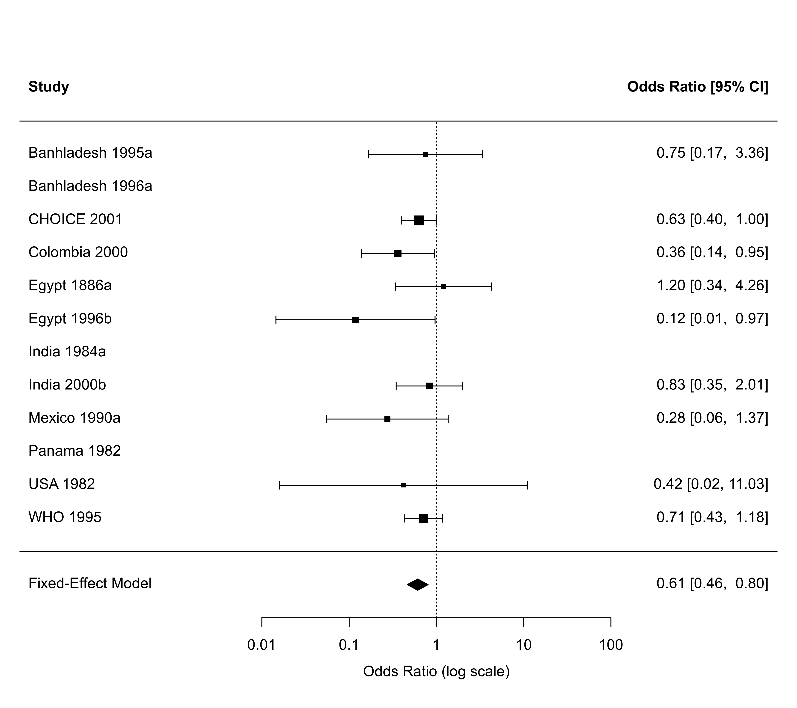

dat.hahn2001.RdResults from 12 trials examining the effectiveness of a reduced versus standard rehydration solution for the prevention of unscheduled intravenous infusion in children with diarrhoea.
dat.hahn2001The data frame contains the following columns:
| study | character | trial name and year |
| ai | numeric | number of children requiring unscheduled intravenous infusion in the reduced rehydration solution group |
| n1i | numeric | number of children in the reduced rehydration solution group |
| ci | numeric | number of children requiring unscheduled intravenous infusion in the standard rehydration solution group |
| n2i | numeric | number of children in the standard rehydration solution group |
The dataset includes the results from 12 randomized clinical trials that examined the effectiveness of a reduced osmolarity oral rehydration solution (total osmolarity <250 mmol/l with reduced sodium) with a standard WHO oral rehydration solution (sodium 90 mmol/l, glucose 111mmol/l, total osmolarity 311 mmol/l) for the prevention of unscheduled intravenous infusion in children with diarrhoea.
Hahn, S., Kim, Y., & Garner, P. (2001). Reduced osmolarity oral rehydration solution for treating dehydration due to diarrhoea in children: Systematic review. British Medical Journal, 323(7304), 81–85. https://doi.org/10.1136/bmj.323.7304.81
medicine, odds ratios, Mantel-Haenszel method
### copy data into 'dat' and examine data
dat <- dat.hahn2001
dat
#> study ai n1i ci n2i
#> 1 Banhladesh 1995a 4 19 5 19
#> 2 Banhladesh 1996a 0 18 0 18
#> 3 CHOICE 2001 34 341 50 334
#> 4 Colombia 2000 7 71 16 69
#> 5 Egypt 1886a 6 45 5 44
#> 6 Egypt 1996b 1 94 8 96
#> 7 India 1984a 0 22 0 22
#> 8 India 2000b 11 88 12 82
#> 9 Mexico 1990a 2 82 7 84
#> 10 Panama 1982 0 33 0 30
#> 11 USA 1982 0 15 1 20
#> 12 WHO 1995 33 221 43 218
### load metafor package
library(metafor)
### meta-analysis of (log) odds rations using the Mantel-Haenszel method
res <- rma.mh(measure="OR", ai=ai, n1i=n1i, ci=ci, n2i=n2i, data=dat, digits=2, slab=study)
#> Warning: Some yi/vi values are NA.
res
#>
#> Equal-Effects Model (k = 12)
#>
#> I^2 (total heterogeneity / total variability): 0.00%
#> H^2 (total variability / sampling variability): 0.82
#>
#> Test for Heterogeneity:
#> Q(df = 8) = 6.53, p-val = 0.59
#>
#> Model Results (log scale):
#>
#> estimate se zval pval ci.lb ci.ub
#> -0.49 0.14 -3.51 <.01 -0.77 -0.22
#>
#> Model Results (OR scale):
#>
#> estimate ci.lb ci.ub
#> 0.61 0.46 0.80
#>
#> Cochran-Mantel-Haenszel Test: CMH = 12.00, df = 1, p-val < 0.01
#> Tarone's Test for Heterogeneity: X^2 = 7.58, df = 8, p-val = 0.48
#>
### forest plot (also show studies that were excluded from the analysis)
options(na.action="na.pass")
forest(res, atransf=exp, xlim=c(-11,9), at=log(c(0.01, 0.1, 1, 10, 100)))

options(na.action="na.omit")